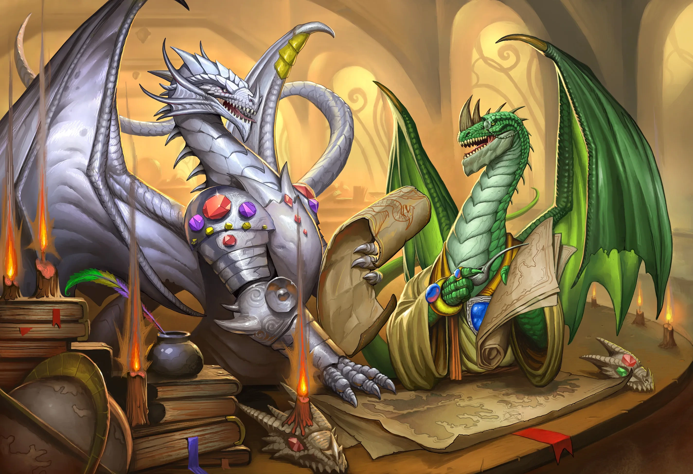

尊贵的瑞扎尼瓦什：
随信附上的诸多发现令我激动得难以自持！我怀着迫切的心情奋笔疾书，思绪仍沉浸在探索发现的狂喜之中――您所托付的寻访并编录世间被遗忘与隐匿的巨龙之举，已取得了圆满成功。遵照您的嘱托，我从搜集那些与童话传说及精类国度息息相关的所谓“仙灵龙”的情报入手，踏上了寻访隐秘巨龙家族的旅程。
正如我一贯对田野考察如饥似渴的热忱，以及绝不轻信一面之词的严谨怀疑精神，我毅然孤身深入仙境，以求印证若干假说并获取第一手资料。我想您定会发现，这些成果本身便已是最好的证明。
伟大的巨龙霸主啊，您大可放心，我的研究成果皆经过严密考据，并在巨龙力所能及的范围内反复核验，力求在一切结论中摒除个人偏见――唯有在成果中明确标明之处除外。当然，任何归纳与剖析都难免带有作者自身的一丝主观色彩，因此我建议您在日后另派一支考察队，以印证我的论断或提出不同见解。至于在您的巨龙霸主任期届满之前派谁前往、何时成行，便全凭您定夺了。
一如既往竭诚效劳于您的
――永光贤者卡利赞德雷克斯
欢迎来到《Battlezoo 巨龙：仙灵龙》！自《Battlezoo 先祖：巨龙》问世以来，这几年可谓瞬息万变；我们收到了许多希望推出更多巨龙的呼声，而仙灵龙更是名列榜首。于是，这本书应运而生！我邀请了曾为 Roll for Combat 与 Paizo 撰稿的资深作者杰西卡・卡塔兰（Jessica Catalan）来设计这批全新巨龙，相信你们一定会爱上她的构思。
正如最初的巨龙血统一样，让一条巨龙与其他种族和职业的角色一同愉快且平衡地进行游戏，或许看似难以置信，但我深信本作同样不负众望――这尤其要归功于测试玩家们的协助，他们不仅肯定了原始设计，还贡献了大量绝妙构思，并最终融入了成书之中。如果你们的跑团小队在游玩时发现书中有任何内容相比基础种族与职业显得过于强力，请随时告知我们，我们很乐意提供帮助！闲话少叙，让我们一起来看看本书都带来了哪些精彩内容吧！
跟随我们的叙述者――巨龙学者卡利赞德雷克斯一同踏入精类的世界。亲历卡利赞德雷克斯穿越奇想国度的旅程，沉浸于仙灵龙中常见的仙境主题。本章篇幅精炼而妙趣横生，非常适合想要了解仙灵龙角色的言行举止及其故乡风貌的GM与玩家。
本章是献给各位玩家的重头戏。我们在其中囊括了扮演任意仙灵龙血统的巨龙角色所需的全部内容，包括巨龙种族基础规则、全新的巨龙职业、巨龙蹂躏者与巨龙法师子职，以及专为五种仙灵龙血统打造的全新龙之馈赠。本章末尾还收录了出自卡利赞德雷克斯案头的五种血统面向玩家的背景学识。虽然同样欢迎GM细读这一部分，但这些背景学识专为构思角色背景故事与文化渊源的玩家量身打造。
本章是一部怪物图鉴，收录了全部五种仙灵龙血统的青年、成年、远古及太古阶段资料卡，并附有面向GM的背景设定与卡利赞德雷克斯的考察札记。你还可以在此找到描绘各血统强大巨龙个体的边栏与正文，将它们用作自家战役的剧情钩子或灵感源泉。其中部分巨龙由杰西卡或我本人设计，其余则与众多巨龙爱好者共同创作完成。
这篇选自卡利赞德雷克斯研究手记的独立文章介绍了经典太古龙――在本书中即色彩龙的太古龙，而非仙灵龙。每条巨龙都具备强化的资料卡数据，能为你的高等级玩家角色带来远超默认版本的严峻挑战；文中还附有太古龙通论以及特定太古龙个体的背景故事，方便你轻松将其融入自己的游戏之中。此外，书中还收录了太古蓝龙与太古红龙的两幅整页巢穴地图，以及这两条特定太古龙的额外细节与背景设定。
――马克・塞夫特（Mark Seifter），Roll for Combat
游戏设计总监
以下术语与具名角色均会在正文的相应语境中加以界定与阐释，但我们在此将其一并列出，以供快速查阅。
永光龙 完成了永恒之光仪式的巨龙。永光龙往往过着波澜壮阔的冒险生活，并借由自身经历而非漫长岁月的流逝来获得成长。
卡利赞德雷克斯 一位痴迷于研究永恒之光仪式、尤其是永光龙的绿角永光龙学者，不过他对尚未被发掘的各类巨龙学识也抱有一定兴趣。为了开展田野考察，卡利赞德雷克斯不惜付出任何代价，甚至甘冒奇险；他将研究成果汇编为多部著作出版发行。他是本书在设定世界内的作者兼叙述者。
永恒之光仪式 这项神秘的仪式能让巨龙将一生的魔法潜能一次性灌注进自己体内，虽然这会令其魔力暂时“短路”，却能让他们在不断突破自身极限时，以远超寻常巨龙的速度飞快成长。成功完成该仪式的巨龙被称为永光龙。
瑞扎尼瓦什 一位身披闪亮银鳞的强大永光龙。瑞扎尼瓦什在巨龙霸主争霸赛中先后击败了本族及所有其他巨龙家族的冠军，赢得了为期十年的巨龙霸主头衔。这一头衔在很大程度上属于礼仪性质，因为这场争霸赛更接近竞技盛会而非真正的巨龙政治博弈，但它赋予了瑞扎尼瓦什为这十年提出一项行动倡议的权利，并能让相当数量的巨龙至少考虑协助将其付诸实现。就瑞扎尼瓦什而言，她力求寻访并接触世间隐匿的巨龙家族，并将它们称为“秘隐巨龙”。
传统派巨龙 未曾举行永恒之光仪式的巨龙。传统派巨龙往往更严格地遵循自身血统的巨龙常规（对许多巨龙而言，这包括搜集财宝建立宝库，并在看守宝库中休眠度日）。